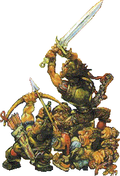

|
|
Samuel VimaireSamuel Vimes | |
Commandant Samuel Vimaire, Chef du Guet de Nuit de La ville d'Ankh-Morpork. Un homme honorable et honnête. Le Guet de nuit est considéré par toutes les personnes raisonnables comme quelque chose de totalement inutile à la bonne marche de la cité. Le Guet municipal a pu être la cause de ses problèmes de boisson. Un état de sobriété n'est en effet pas celui dans lequel on aimerai voir une ville comme Ankh-Morpok, mais cela s'arrange avec un verre ou cinq, ou plus encore( plus on en boit, mieux c'est). Il est né dans Cockbill Street, dans les ombres. Être membre du Guet est une tradition dans sa famille, et il y serait allé juste après avoir quitté l'école s'il était déjà allé à l'école. Il n'est pas ambitieux et sa promotion est simplement due au fait qu'il était impossible d'imaginer un des autres membres du Guet ayant une promotion. Il est en meilleure santé ces derniers temps étant donné que cela fait un certain temps qu'il n'a pas bu (faut bien : il a épousé la Dame Sybil Ramkin, qui n'approuve pas, mais alors pas du tout). Il n'aime pas les rois, les mort-vivants et les assassins, les nains et les trolls et les femmes. Il méprise aussi la ville. Cependant, il réussit à passer au-dessus de cela. Cela dit, il vaut mieux: une partie de son équipe du Guet est composée de ces personnes qu'il n'aime pas. Sans compter qu'il va épouser Dame Ramkin qui est la femme la plus riche D'Ankh-Morpork. Pour lui, personne n'est au-dessus de la loi, et il fera tout ce qu'il faut pour protéger les gens d'eux-mêmes. Il déteste les mondanités, les aristocrates, vicieux comme des renards couplés à des serpents. Il aime son travail. Enfin, comme on aime ses mains ou ses pieds: ce n'est pas vraiment qu'on les apprécie, mais elles s'imposent énormément. On le retrouve dans : Au Guet !, Le Guet des Orfèvres, Pieds d'Argile, Va-t-en-guerre. |